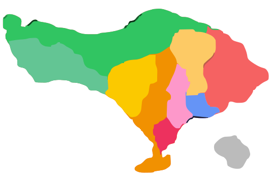

← Kembali ke Perjalanan
Learn by Playing
Quiz Journey
Pilih wilayah, jawab kuis, dan baca penjelasan singkat di setiap langkah. Ini game edukatif, fokus pada makna dan konteks budaya.
Pilih wilayah (West / Central / East) untuk memulai level.
